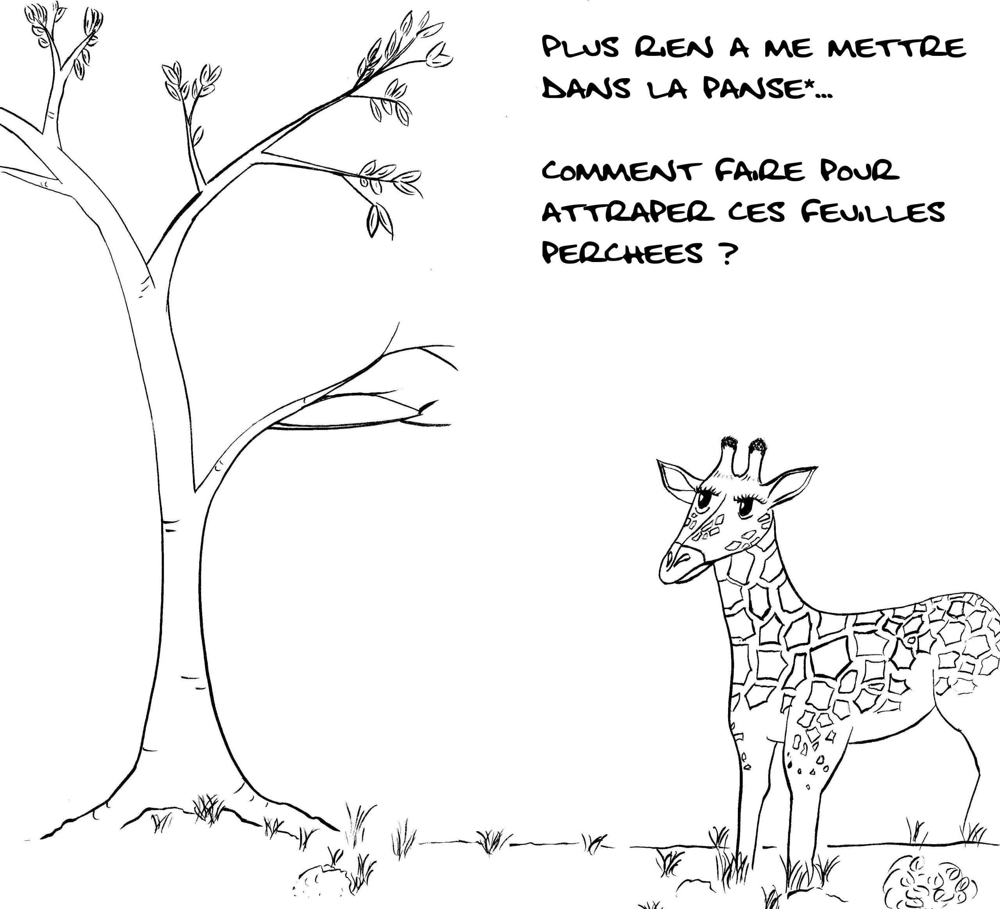
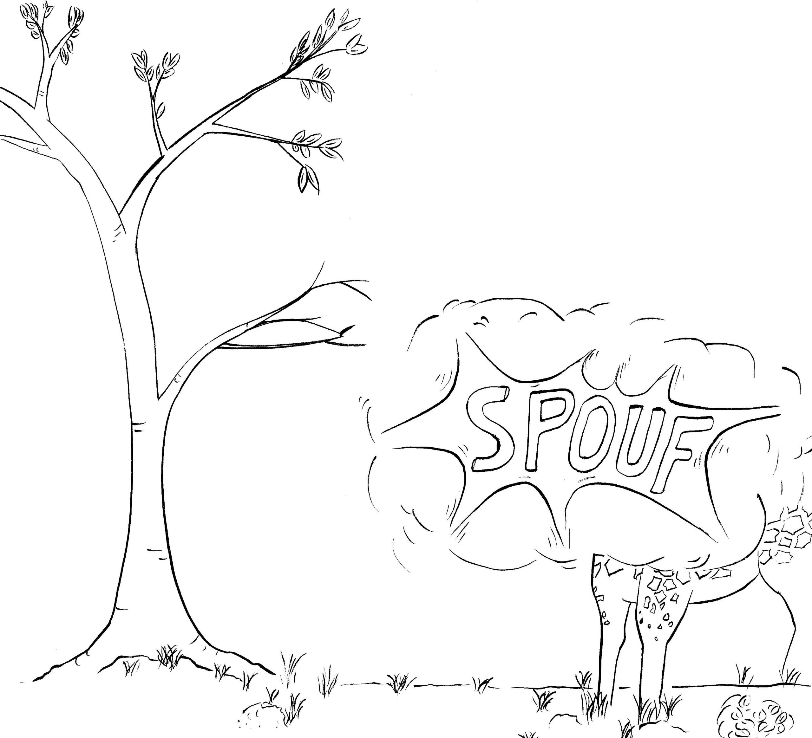
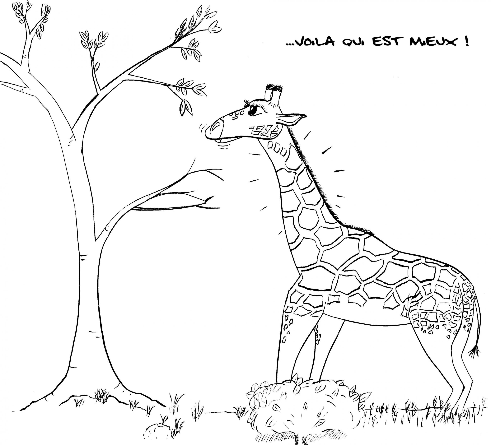

« Pourquoi la girafe a un long cou ? » Si la question peut s'entendre (nous verrons que la formulation est imprécise), la réponse sera nécessairement finaliste : « pour manger les feuilles les plus hautes des arbres ». L'idée qui vient alors en tête pourrait s'illustrer ainsi :
{kind=link}

{kind=link}

{kind=link}

*comme les bovins, ovins et caprins, la girafe rumine. Elle dispose donc d'un appareil digestif spécialisé, formé d'une panse, où des fermentations microbiennes digèrent la matière organique végétale.
Dans ce schéma, l'action d'apparition du cou est déterministe : elle est commandée par la contrainte de départ ; le cou long apparaît ainsi comme la réponse à cette contrainte. On est dans une démarche finaliste : l'organe est apparu pour mieux nourrir l'animal.
Permet de, plutôt que Pour
Cette façon de penser est naturelle pour nous : tout objet a une fonction, conçue au départ pour répondre à un problème. Les lunettes sont là pour améliorer notre vue, les chaussures pour protéger nos pieds, les vêtements pour nous tenir chaud. Mais ce raisonnement ne s'applique pas au vivant : une adaptation biologique n'apparaît pas en réponse à une contrainte. Elle apparaît par hasard, parmi de nombreuses autres variations (de couleur, de pilosité, de musculature…). Si une variation s'avère avantageuse, elle peut être sélectionnée par sélection naturelle. La girafe a un cou long, c'est un fait ; il se trouve que ça lui permet de se nourrir des feuilles les plus hautes. C'est un avantage qui explique que ce caractère soit conservé chez l'espèce. L'expression « permet de » est très différente de « pour » : pas de finalisme ici.
Tout comme « pour », les expressions « dans le but de… » ou « l'objectif de cet organe… », « afin de… » sont à proscrire quand on décrit des phénomènes biologiques. Quelques exemples :
- « l'animal doit éviter les pertes d'eau en milieu aérien, donc il excrète l'azote sous forme d'urée ». Préférer « l'animal excrète l'azote sous forme d'urée en milieu aérien, ce qui permet d'éviter les pertes d'eau ».
- « dans le vivant, les cellules doivent effectuer des travaux cellulaires pour maintenir l'organisme en vie ». Préférer « dans le vivant, les cellules effectuent des travaux cellulaires, qui permettent de maintenir l'organisme en vie ».
- « les parasites profitent de l'hôte afin de perpétuer leur population ». Préférer « les parasites se développent au sein d'un hôte, ce qui entraîne le développement de leur population ».
- « les graines possèdent de grandes réserves pour assurer la survie de l'embryon ». Préférer « les graines possèdent de grandes réserves, qui permettent la survie de l'embryon ».
- « Les graines sont des structures douées d'une mobilité ». Préférer « les graines sont mobiles ».
Pourquoi est le problème
Si l'on reprend la question de départ, sa formulation pose problème : que signifie « pourquoi » ? Ça peut être « quel est l'intérêt pour la girafe » ? ou alors « comment ce cou est apparu » ? En règle générale, en biologie il est déconseillé d'utiliser le mot pourquoi, qui renvoie bien souvent à une réponse commençant par « pour », fatalement finaliste.
Ce cou…une affaire de sexe !
Tordons le cou à une idée reçue : si la longueur extraordinaire de ce fameux organe est un avantage indéniable pour brouter les feuilles les plus hautes, ce n'est probablement pas la raison de sa sélection au cours de l'évolution. En effet, en période de grande sécheresse, là où l'accès à la nourriture est le plus difficile, les girafes montrent une préférence pour les buissons bas de mimosas, et d'acacias… !
Une autre explication plus pertinente, est liée à la reproduction : les mâles s'adonnent à une pratique tout à fait originale, nommée « necking », que l'on pourrait traduire par « combats de cous »(1). Des rituels qui peuvent être violents, à l'issue desquels le vainqueur gagne l'accès à la reproduction avec une femelle. Le caractère « cou long et musclé » est ainsi transmis aux descendants bien plus vite. C'est de la sélection sexuelle. L'apparition du cou de la girafe serait donc à rapprocher d'autres organes exceptionnels, comme les bois du cerf ou la queue du paon.
(1): Grandeurs et décadences de la girafe, JL Hartenberger, Belin, 2010
Simmons, Robert & Scheepers, Lue. (1996). Winning by a Neck: Sexual Selection in the Evolution of Giraffe. American Naturalist. 148. 771-786.